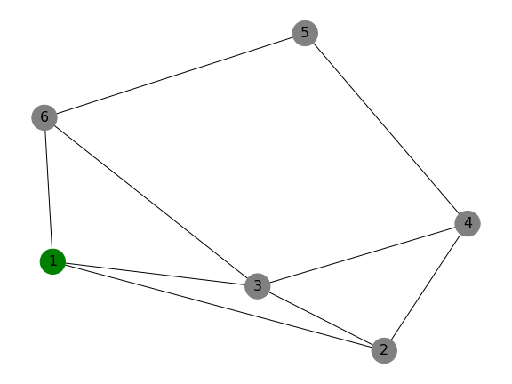

Introduction
Dijkstra's Algorithm is a graph search algorithm that finds the shortest path between nodes in a graph.
How It Works
- Start at the source node.
- Initialize distances to all nodes as infinity, except for the source node (distance 0).
- Visit the nearest unvisited node and update distances to its neighbors.
- Repeat until all nodes have been visited.
Example
Below is an example of Dijkstra’s Algorithm applied to a weighted graph:
Applications
Dijkstra’s Algorithm is used in:
- GPS Navigation Systems
- Network Routing Protocols
- AI Pathfinding (e.g., in games)
More Information
Learn more about Dijkstra's Algorithm on Wikipedia.